My goal with Walker Bot was to build a four-legged walking bot that could be made in 10 minutes. This bot ultimately took 3 hours to make. That said, my goal wasn’t to make one in 10 minutes myself, but to make one that could be made in 10 minutes. I’m pretty confident that, now that I know what I am doing, should I need to make a second one I could feasibly do it in 10 minutes. At the very least, you’ll be hard-pressed to make a simpler walking bot than this one, so I consider this project a glowing success.
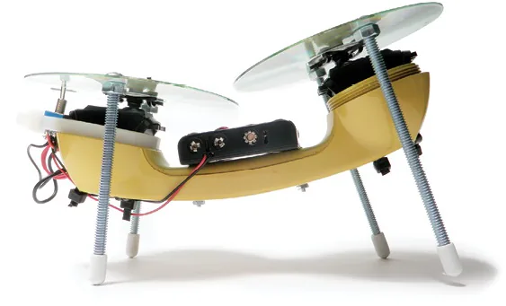
Tools and Supplies
- Two continuous-rotation servo motors with the controllers removed
- Four AA batteries
- A 4 × AA battery holder
- DPDT lever switch
- A “classic” telephone handset (search online for “vintage telephone handset”)
- Two CDs (these should not be from anyone’s music collection)
- Two 1/4-20 × 6-inch bolts
- Two 1/4-20 × 5-inch bolts
- Four 1/4-20 nuts
- Four ¼-inch rubber bolt covers
- Two 4-40 × 1-inch nuts and bolts
- Roll of painter’s tape
- An assortment of zip ties
- Cut template (see Appendix B)
- Drill
- Three drill bits: 1/4, 1/8, and 3/16 inch
- Scissors
- Cutting pliers
- Wire stripper
Walker Overview
To build Walker Bot, you’ll use the same modified servo motors (Chapter 4) or the geared motor alternatives (Appendix A) used for the previous bots. Once you’ve modified the motors, the next step will be to take apart the telephone handset and place the servos where the microphone and speaker used to be. From there, you’ll zip-tie the DPDT switch to one end of the headset. Next, you’ll mount the battery holder to the telephone handset’s handle, and you’ll wire the switch in an H-bridge configuration to complete the circuit. Then, you’ll trace and cut out or print the CD cutting templates, which you’ll tape to the CDs (or DVDs). You’ll use these templates as guides for drilling and cutting the appropriate holes and shapes into the CDs. Once this is completed, you’ll zip-tie the CDs to the motors and insert bolts through the CDs to act as legs. Finally, you’ll insert batteries and put Walker Bot down so it can walk around.
Constructing Walker
Step 1. Widen the second-from-last hole on each end of the motor horns using a 1/8-inch drill bit.
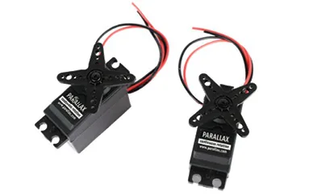
Step 2. Remove the covers from the telephone handset and then pull out the speaker, microphone, and jack. They should come right out.
Step 3. Drill four 3/16-inch holes in each end of the telephone handset, as pictured. Essentially, you should drill the holes so that they create a square on the backside of each opening.
Step 4. Starting on the side of the handset opposite where the jack was, pass the motor’s wires through the body of the phone and out the hole created by removing the jack. Insert the first motor into the handset opening on the opposite side of the jack so that the horn faces inward.
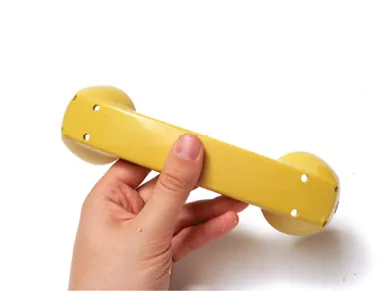
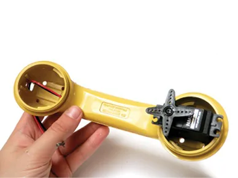
Step 5. Pass the second motor’s wires through the hole created by the jack and insert that motor into the end of the handset. Make certain that the horn for this motor also faces inward. Zip-tie them both in place using the holes you drilled earlier.
Step 6. Zip-tie the DPDT switch to the round mouthpiece opening, right above the hole created by removing the jack. There should be a small lip upon which the switch can sit. Make certain that the lever of the switch points upward (toward the gear on the motor).
Step 7. Using the mounting holes in the battery pack as guides, drill two 1/8-inch holes into the center of the handset such that they line up with the mounting holes of your AA battery holder.
Step 8. Bolt the battery holder onto the handset with your pair of 1-inch nuts and bolts.
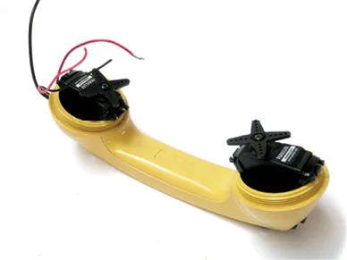
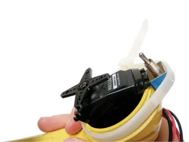
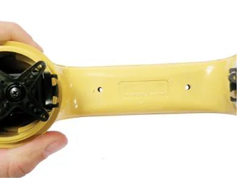
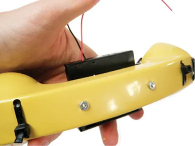
Step 9. Solder the red and black wires from the battery holder to each of the center terminals of the DPDT switch.
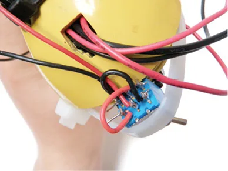
Solder two short wires to form an X between the outer terminals of the switch. Basically, the back left should be connected to the front right, and the front left to the back right. This causes power to be applied backward when the switch is flipped.
Solder together the red wire from motor one with the black wire from motor two, and solder the black wire from motor one with the red wire from motor two (which motor is designated to be which is unimportant).
Finally, solder the red and black wire pairs to either set of outer terminals. For instance, solder one pair to the back-left terminal and the other pair to the back-right terminal.
Step 10. To prepare the CDs (or DVDs) that will mount to the bot, trace the cutting templates and then cut out the two large circles.
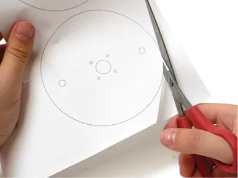
Step 11. Center and tape a template on top of each CD.
Step 12. For the two large outer circles, drill ¼-inch holes. For the four smaller inner circles, drill 1/8-inch holes.
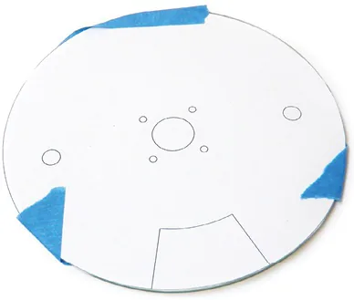
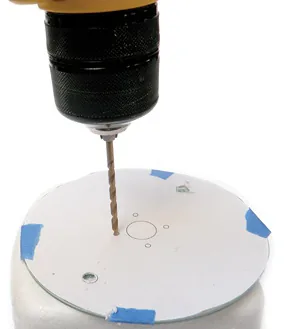
Step 13. Find the CD with the outer notch and cut it out carefully with scissors.
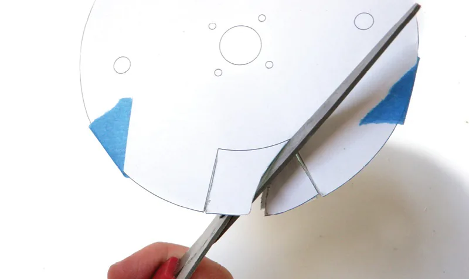
Step 14. Zip-tie the CDs to the motors so that the two outer holes on each CD are perpendicular to the handset and the CD with the outer notch aligns with the lever from the DPDT toggle switch.
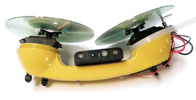
Step 15. Pass the shorter 5-inch bolts through the notched CD. Pass the longer 6-inch bolts upward through the other CD. Fasten all of them in place with nuts.
Step 16. Cover all of the bolts with rubber bolt covers to give them a bit more traction.
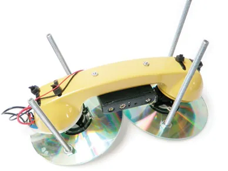
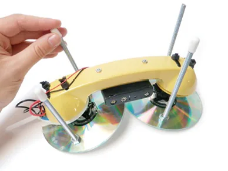
Step 17. Insert the batteries and then let the bot go.
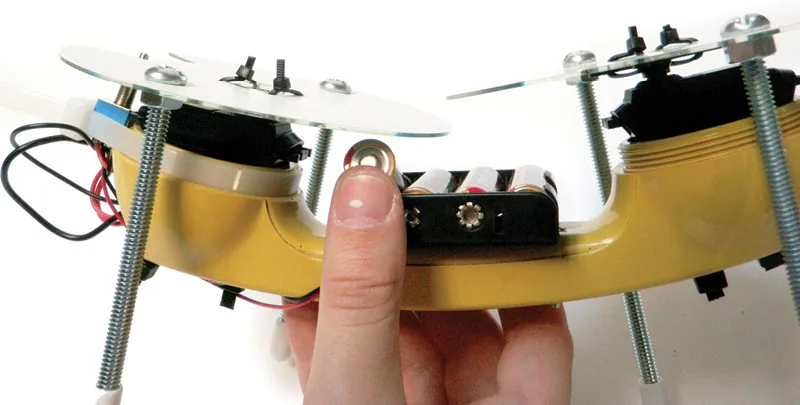